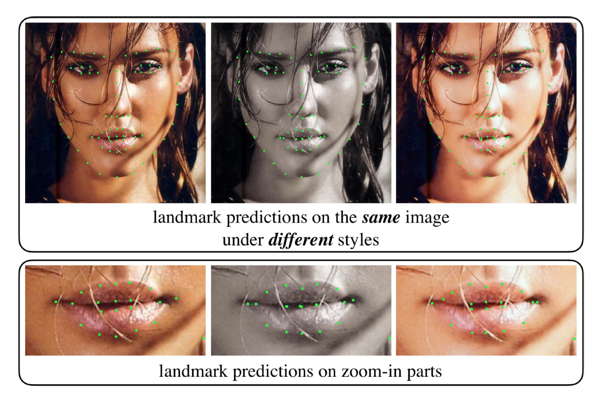
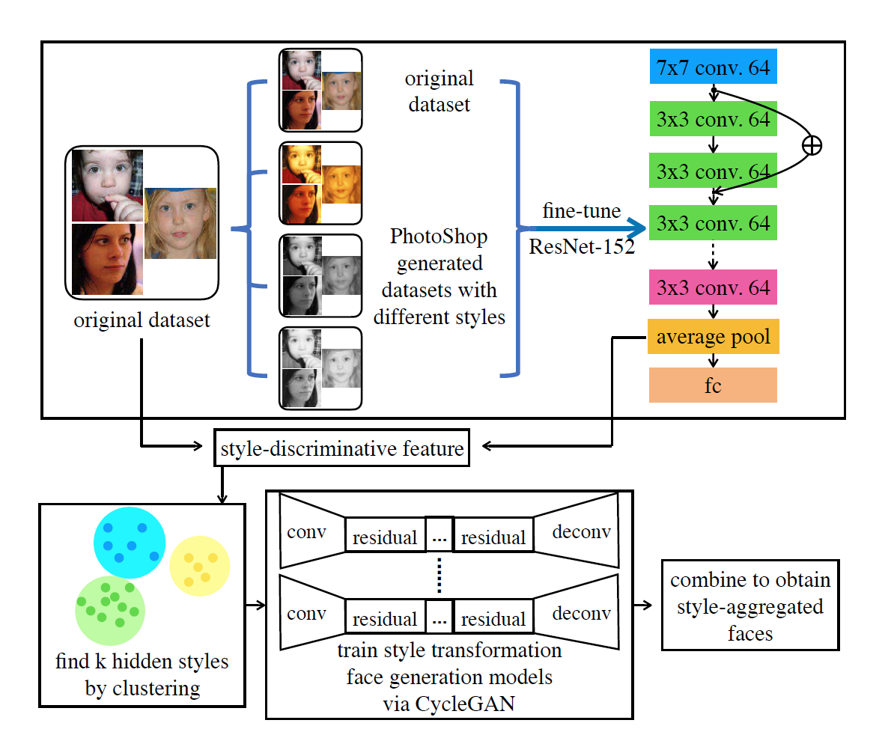
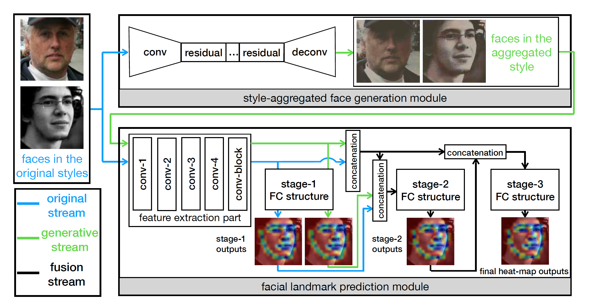
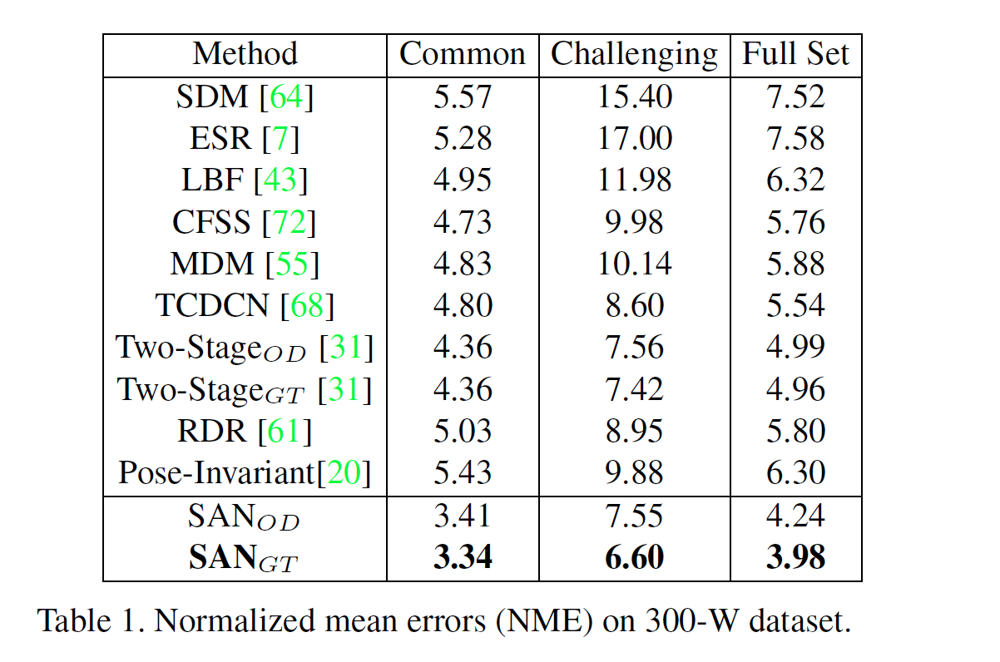

Style Aggregated Network for Facial Landmark Detection
URL:http://openaccess.thecvf.com/content_cvpr_2018/papers/Dong_Style_Aggregated_Network_CVPR_2018_paper.pdf
这篇论文主要想解决的问题是不同的图片风格对landmark定位的影响，比如论文中给出的例子对于同一张图片的不同风格（原图、灰度图、以及加入光照的图片）通过嘴部特写可以看到明显的差别。因此论文提出 Style-Aggregated Network (SAN) 整合不同的图片风格来更好的检测人脸lmk.

SAN结构可以分成两个部分：
- Style-Aggregated Face Generation Module：这一部分论文主要利用CycleGAN来进行Style transfer主要做法是对于给定的一个数据集，利用PhotoShop将其转化成Light、Gray、Sketch三种风格的图片，加上原来的数据集总共就四类风格的数据集，这四类的数据集再作为resnet-152的输入训练出一个4分类的分类器，网络最后global average pooling的输出被视为风格特征表示，因此原数据集的风格特征在经过聚类之后就可以得到图片风格的label，这是论文对没有标注的数据集进行标注的方式，最后训练CycleGAN并将不同的风格图片相融合得到最后的style-aggregated人脸。
 - Facial Landmark Prediction Module：这个模块主要是标准的CNN网络结构，论文中的结构示意图写的很清楚，Prediction module接受原图和上一步产生的style-aggregated图作为输入，在经过一段CNN网络提取特征之后以cascade的形式经过三个阶段（FC，Fully-Convolution）不断的refine landmark位置信息，由于模块里加入了Pooling层，因此最后的size是小于原图的所以最后的输出是通过 bicubic interpolation插值得到所有的位置信息。

实验对比，可以发现效果还比较明显：

本博客所有文章除特别声明外，均采用 CC BY-NC-SA 4.0 许可协议。转载请注明来自 Out of Memory！